A Visual Explanation of Variance, Covariance, Correlation and Causation
Improve your data analysis skills by understanding basic statistical concepts.
September 18, 2024 · Statistics
Introduction
In Machine Learning we are often interested in knowing the relationships that exist between our data. Imagine you have a structured dataset, represented as a table in a DataFrame. You want to know if any columns are related to others, perhaps to know if there is any redundant information. It would also be useful to know if one of the variables is the cause of another. Let’s see how to do that in this article!
Variance
Let’s now imagine that we have a dataset (a set of points) in one dimension. The first thing we want to do is to calculate the variance of these points.
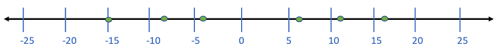
The variance intuitively tells us how far our points are from the mean. For example, if I eat one ice cream and you also eat one, on average we ate the same number of ice creams that is one. But even if I eat two ice creams and you eat zero, on average we always ate one ice cream each. It’s the variance that changes!
In our dataset, the mean is: m = 1
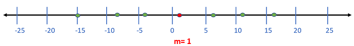
To compute the variance, we first calculate how far each point is from the mean.
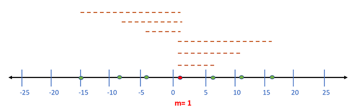
Now we need to construct a square for each dashed line we have. I will only display the square for the first line, but you will have to do it for all of them.
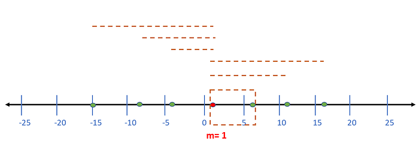
Now we simply need to sum up the area of all the squares and divide by the number of squares-1. Let’s say that the final variance is equal to 138.
The formula we just applied visually is the variance formula.
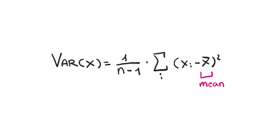
Two Dimensions Dataset
Let us continue by complicating things a bit but not too much. Let’s now imagine having a two-dimensional dataset. Then each point is defined by a pair (x,y).
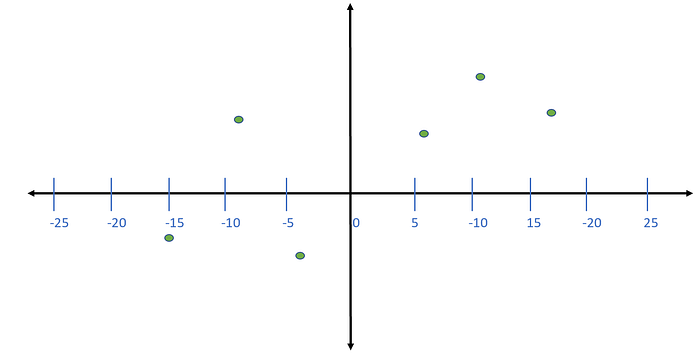
We already know that the variance of the point with respect to the x-axis is 138. But now we can also compute the variance of the y-axis. It’s simple we can project all the points on the y-axis and compute the variance in the same way as before.
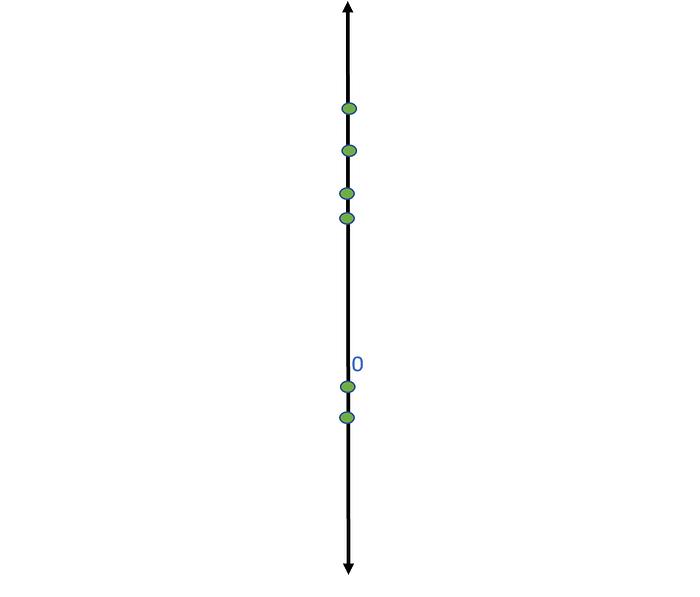
Then, we found out that the variance with respect to the y-axis is (let’s say) 21.
Now we have both var(x) and var(y). But these 2 values alone don’t say too much about the distribution of the data in the 2 dimensions.
By looking at the graph we can intuitively infer that there is a trend, while x increases, y also increases.
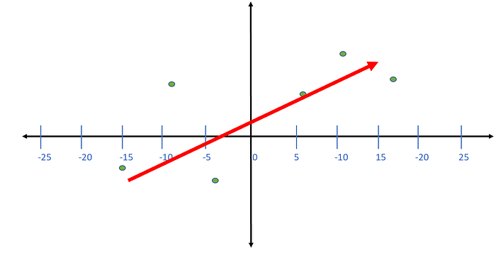
But it is not possible to infer this trend just by looking at the values var(x) and var(y).
In fact, if we mirror the points, (we multiply the x coordinate of each point by -1), var(x) and var(y) will not change, but the trend will be the opposite!
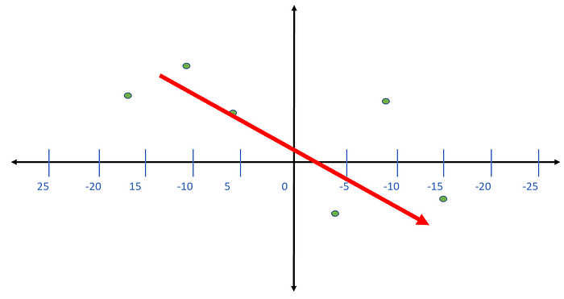
Covariance
Here comes the covariance between x and y. In order to compute the covariance, we have to calculate the mean of the x coordinates and the y coordinates. Let's say these means are 1 and 3. We can plot 2 straight passing through these values.
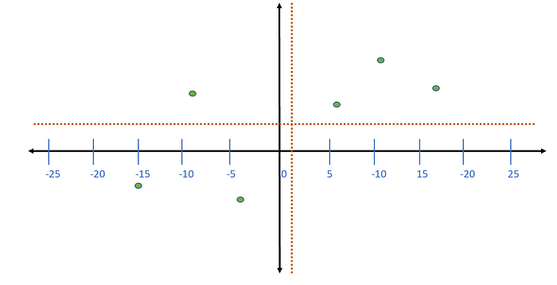
Now we calculate the area of the rectangles that these straight lines form with our points. I will demonstrate this with a single point for simplicity.
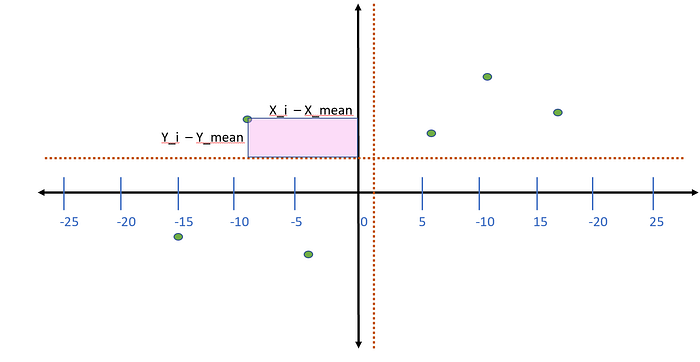
To calculate the area of these rectangles simply compute the difference between the point coordinates and the averages, and then multiply these differences between them.
Once you have calculated the area of all the rectangles simply add them up, and divide by the number of rectangles-1.
In this way, we will have applied the covariance formula.
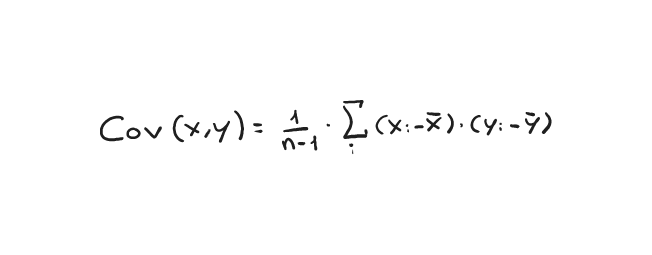
Now that we know how to calculate the covariance, you can see that if the covariance is positive it means we have a positive trend, otherwise a negative trend.
So covariance tells us how two variables are correlated, it does not, however, tell us how strong this correlation is. In fact, the range of the covariance value is [-inf, +inf], so it is not possible to define a strength of the relationship between the two variables.
Correlation
Correlation, on the other hand, is that value that lets us know how strong the relationship between two variables is, it has a range of values in [-1, +1].
The formula for its calculation is as follows.
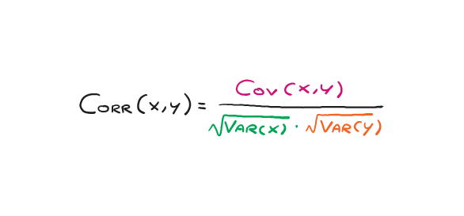
So if the values on the x-axis grow and those in y also grow, we would have a correlation close to 1.
On the other hand, if x increases and y decreases, we would have a correlation close to -1.
If the correlation is zero, it means there is no correlation between the two variables.
The Causation Error
It is often thought that in the case where there is a strong correlation, there is also a causal relationship. Sometimes this is true, in fact, we might have that variable x indicates how rich we are and variable y which indicates the size of our house. And we might infer that there is causation, i.e., the more money a person makes, the bigger his house is.
But often this is not the case. For example, suppose variable x indicates how many snow gloves we have, and variable y indicates how many soups we eat each week. Obviously, there is no causality between the two, though we notice in the data that the more snow gloves a person has, the more hot soups he or she eats each week.
But often what happens is that there is a third variable that affects the two variables that we are not aware of.
In this case, the third variable might be, how cold it is outside. So the colder it gets the more snow gloves we have, and the more soups we eat. But gloves and soup do not have a causal relationship!
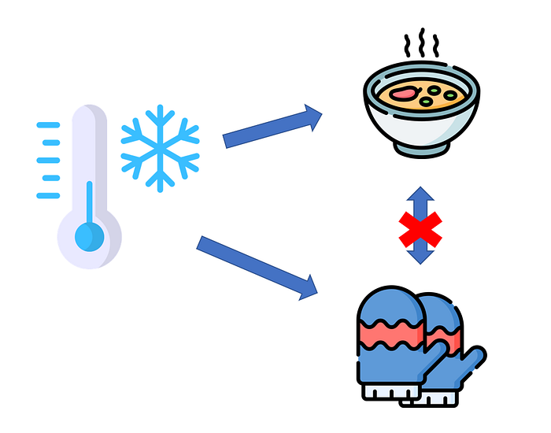
Final Thoughts
I hope this article has helped you to understand a little better these basic statistical concepts, which are very important in data science, though. I believe that visualizing formulas through geometric images is much easier! If you ‘liked the article follow me here on Medium!😁
The End
Marcello Politi
This article was published on Towards Data Science